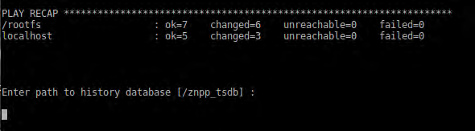
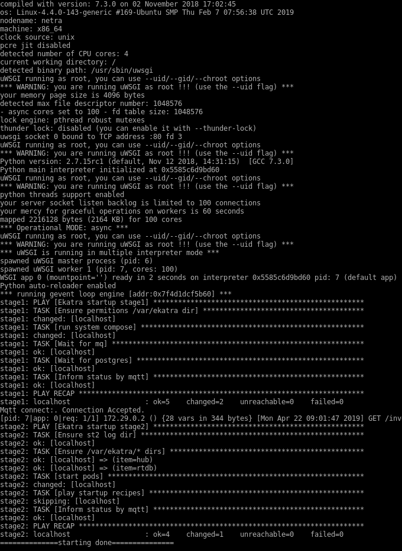
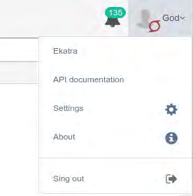
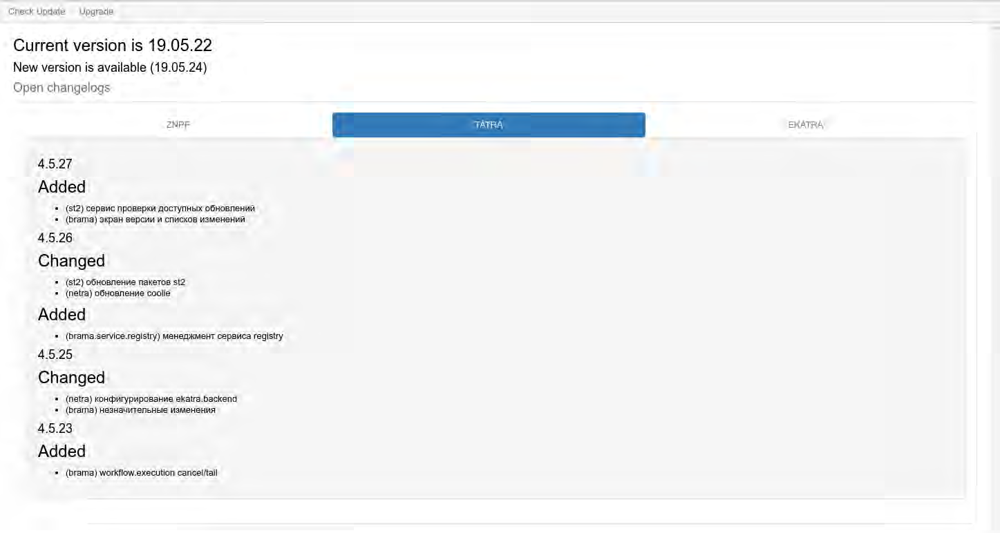
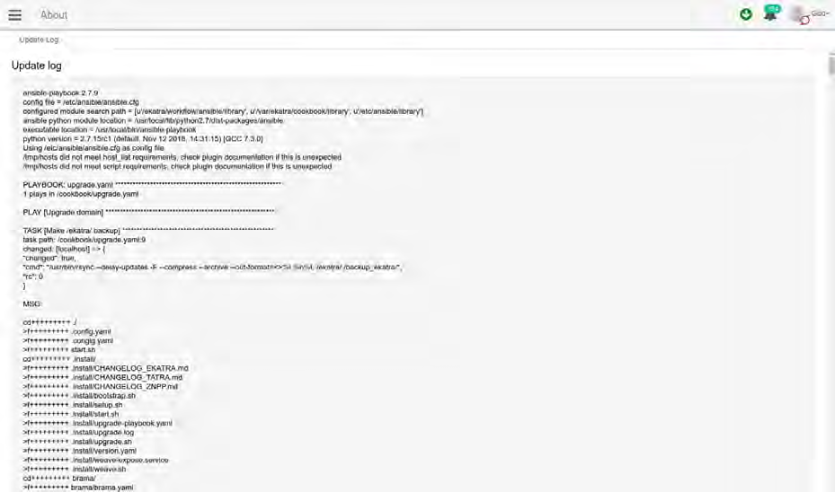

Инсталляционные пакеты прикладного ПО размещаются на ресурсах корпоративной сети sdn.dc.cns.atom и registry.dc.cns.atom.
В состав входят следующие пакеты:
1 weave;
2 docker;
3 site.
Шаг 1 Для загрузки прикладного ПО необходимо обеспечить доступ к ресурсам корпоративной сети sdn.dc.cns.atom и registry.dc.cns.atom.
Шаг 2 Для установки прикладного ПО необходимо загрузить и запустить инсталляционный скрипт, выполнив следующие команды:
bash <(curl -s http://sdn.dc.cns.atom/install/sites/znpp/net-install.sh) setupПри возникновении запроса «Enter path to history database» во время установки необходимо ввести путь, по которому будет храниться база исторических данных:

Рисунок 4.1 – Запрос «Enter path to history database»
По окончанию выполнения скриптов установки прикладного ПО (останов выводана экран) необходимо удостовериться в правильности завершения установки.
Удостовериться в отсутствии ошибок в конце вывода экрана установки (failed=0).
Шаг 3 Выполнить команду:
docker logs -f netra
и ожидать завершения вывода на экран, последней строкой должно быть сообщение «starting done»:

Рисунок 4.2 – Сообщение «starting done»
Шаг 4 Выполнить команду:
>docker psНа экран будет выдан список всех загруженных docker-контейнеров.
Необходимо убедиться, что в выводе присутствуют все контейнеры групп PODS:ZNPP (п. 2.9) и SYSTEM (п. 2.9).
Успешное выполнение шагов 3 и 4 означает, что прикладное ПО загружено, установлено и запущено.
Для установки доменных ключей и ключей центров сертификации необходимо, что бы они были в архиве certificates.tgz, архив размещен в том-же каталоге что и скрипт net-install.sh.
Файловая структура архива certificates.tgz: > – <доменное имя>.key - приватная часть ключа (znpp.cns.atom.key); > – <доменное имя>.crt - публичная часть ключа (znpp.cns.atom.crt); > – <имя центра сертификации>-CA.crt - публичная часть ключа центра сертификации (ZNPP-Root-CA.crt).
Для установки ключей сертификации необходимо удалить registry.master.cns/znpp/traefik, если он присутствует на хосте, выполнив команду:
docker images | grep " registry.znpp.cns.atom/znpp/traefik " | awk '{printf "%s:%s\n", $1, $2}'| while read -r line; do docker rmi -f $line ;done;Далее необходимо выполнить установку, выполнив команду:
sudo ./net-install.sh setupИли выполнить обновление, если система уже установлена, выполнив команду:
sudo ./net-install.sh upgradeПримечание:
Команды для распаковки pkcs12 при помощи openssl:
openssl pkcs12 -in cert.pfx -nocerts -nodes -passin pass:<пароль> | openssl pkey -out <доменное имя>.key
openssl pkcs12 -in cert.pfx -clcerts -nokeys -nodes -passin pass:<пароль> | openssl x509 -out <доменное имя>.crtКоманды для установки корневого сертификата в Debian:
sudo cp ZNPP-Root-CA.crt /usr/local/share/ca-certificates/
sudo update-ca-certificatesДля загрузки обновления прикладного ПО необходимо обеспечить доступ к ресурсам корпоративной сети sdn.dc.cns.atom и registry.dc.cns.atom.
Для проверки наличия обновлений необходимо перейти на экран About нажав на соответствующую кнопку в нижнем меню Brama:
Рисунок 4.3 – Кнопка перехода на экран About
Или выбрав пункт About в меню пользователя:

Рисунок 4.4 – Пункт меню About
На экране About отображается текущая версия прикладного ПО и полный список изменений:
При нажатии на пункт меню Check Update происходит проверка наличия новой версии прикладного ПО.
При наличии новой версии на экране будет отображено сообщение «New version is available» и список изменений в обновлении.
Также появится кнопка Upgrade (доступна только для пользователей с ролью supervisor):

Рисунок 4.6 – Экран About при наличии новой версии ПО
Также в правом верхнем углу появляется кнопка, при нажатии на которою можно перейти на экран обновлений:
Рисунок 4.7 – Отображение наличия обновлений
Для обновления прикладного ПО необходимо загрузить и запустить инсталляционный скрипт, выполнив следующие команды:
bash <(curl -s http://<source_sdn_domain>/install/sites/<source_domain>/net-install.sh) upgradeИли нажать на кнопку Upgrade.
После завершения обновления, журнал обновления можно посмотреть в меню About, на экране Update Logs:

После выполнения процедуры инсталляции или обновления прикладного ПО, необходимо загрузить ключи по умолчанию в st2 нажав на кнопку Load defaults на экране Keys в меню Workflow и выполнить задачу Upload common metadata в проекте Ekatra.